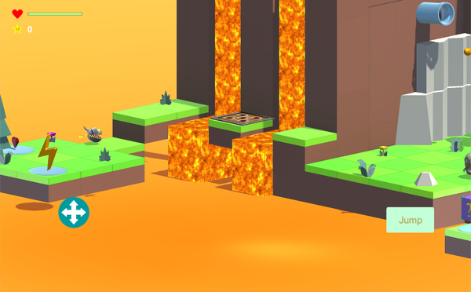
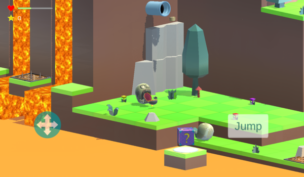
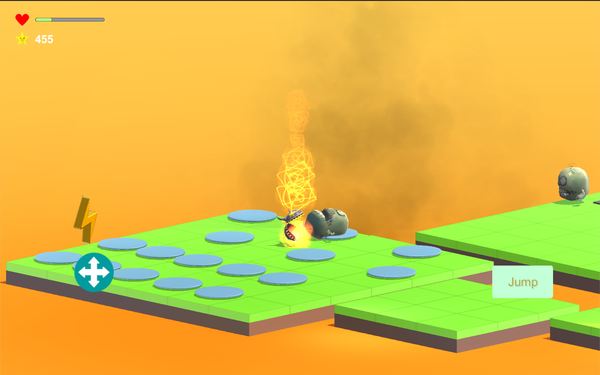
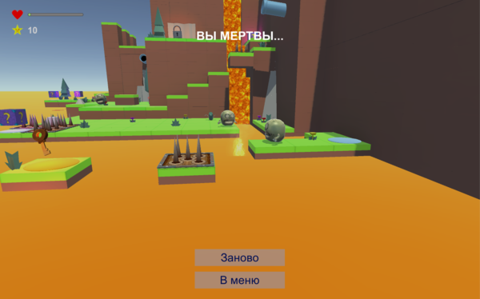
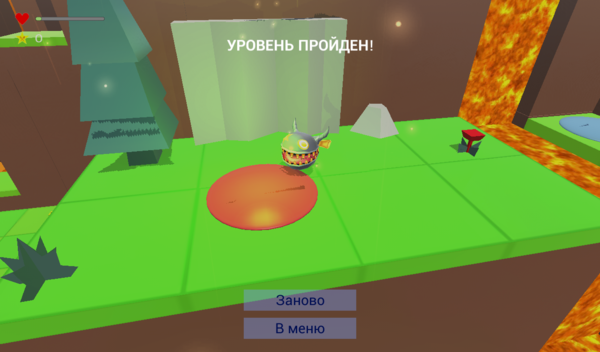

Игра представлена набором уровней, где персонажу требуется подобрать ключ
и добраться с ним до выхода.
Для достижения этой цели придется избегать столкновений с врагами, попадания в радиус действия гранат, падения в лаву, попадания на платформы с выдвижными шипами. Всё это уменьшает уровень здоровья персонажа и может привести к его смерти.
Второстепенной целью является набор максимального количества очков, которые начисляются за сбор еды. Пока игрок находится в заданном радиусе от трубы-раздатчика, из этой трубы с определенным интервалом вылетает еда, которая время от времени катится в случайном направлении, а через несколько секунд исчезает. Ещё одним источником получения еды служат коробки с сюрпризом. При их открытии случайным образом определяется выпадающее содержимое. Это может быть как обычная, так и особо дорогая еда, а кроме того граната, враг, аптечка (восполняет уровень здоровья) или “заряд” (делает игрока неуязвимым и способным убивать врагов в течении нескольких секунд).
При разработке использовались: Unity, C#.
    